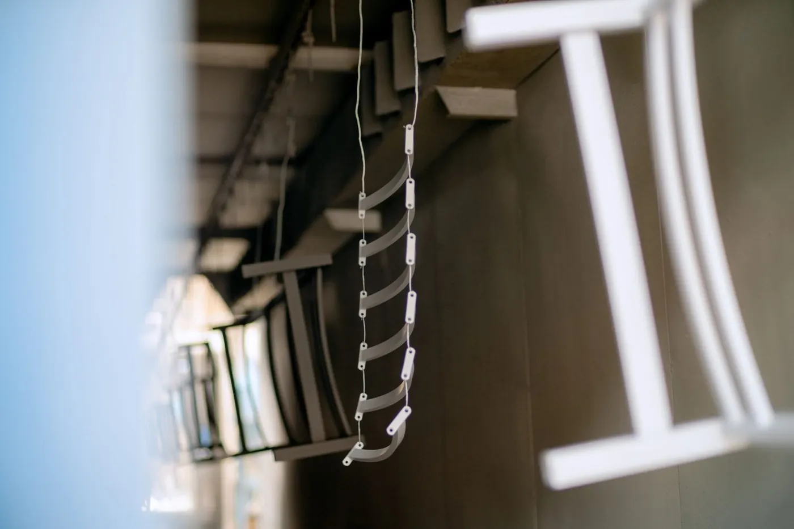

Automoción y componentes
Soportes, bastidores, utillaje y protecciones, en serie y con el mismo acabado lote a lote. No pintamos piezas que exijan la homologación del fabricante del vehículo.
Pintura en polvo para Navarra
Altsasu/Alsasua está a 40 minutos de Legutio por la A-1 y Pamplona, a una hora y cuarto por la A-10. Pintamos piezas y estructuras para la industria navarra, con presupuesto firme en 24 h y plazo estándar de una semana.

En la Sakana, en la comarca de Pamplona y en Tierra Estella hay automoción y componentes, energías renovables, maquinaria agrícola y agroalimentaria, y talleres de metal y carpintería metálica.
La Sakana es la parte de Navarra más cercana a nuestra planta: de Altsasu a Legutio hay unos 40 minutos.
Soportes, bastidores, utillaje y protecciones, en serie y con el mismo acabado lote a lote. No pintamos piezas que exijan la homologación del fabricante del vehículo.
Soportes, armarios, carenados y estructuras auxiliares que van al exterior, con el sistema adecuado al ambiente.
Chasis, protecciones, piezas de máquina, barandillas y estructuras en acero o galvanizado.

Piecerío en serieSoportes, bastidores y piezas de máquina, colgadas una a una en la cadena. Estructuras y construcciónVigas, pórticos, escaleras y entreplantas en acero, hasta 6 m de largo.
Estructuras y construcciónVigas, pórticos, escaleras y entreplantas en acero, hasta 6 m de largo. Chapa plegada y mobiliarioChapa cortada y plegada, armarios, carenados y mobiliario. En la foto, buzones de Joma.
Chapa plegada y mobiliarioChapa cortada y plegada, armarios, carenados y mobiliario. En la foto, buzones de Joma. Cerrajería, tubo y barandillasBarandillas, cierres y tubo, en acero o galvanizado, con imprimación si van al exterior.
Cerrajería, tubo y barandillasBarandillas, cierres y tubo, en acero o galvanizado, con imprimación si van al exterior.Distancias por carretera desde la planta de Legutio, aproximadas:
El exterior en la Navarra interior suele ser un ambiente C2 o C3 según la ISO 12944-2, y ahí un poliéster de exterior sobre un buen pretratamiento es suficiente.
Para maquinaria que trabaja en el campo, equipos junto a carreteras con sal de deshielo o estructuras en entornos industriales agresivos, recomendamos imprimación rica en zinc bajo el poliéster: nuestro sistema C4-H, con el sello en proceso de homologación.
No. Las piezas se entregan y se recogen en nuestra planta de Legutio (C/ San Bartolomé 11, Pol. Ind. Goiain), con tu transporte o con el transportista que elijas. Los portes no están incluidos; si necesitas transporte, lo estudiamos caso a caso. Horario: de lunes a viernes, de 7:00 a 15:00.
El plazo estándar es de una semana desde que las piezas entran en planta. El presupuesto firme te lo enviamos antes, en menos de 24 horas laborables.
Hasta 6 m de largo, 2 m de alto y 0,65 m de ancho, y hasta 165 kg por pieza. Si la tuya no entra, consúltanos.
Sí, si es un RAL o una referencia de fabricante de polvo. Si no tiene referencia, tráenos una muestra y buscamos el polvo más cercano; te enviamos una placa pintada para que lo apruebes antes de pintar el pedido.
 Termolacado de piezas y estructuras
Pintura en polvo epoxi, poliéster o epoxi-poliéster sobre acero, galvanizado y aluminio, del piecerío a la gran dimensión. Carta RAL, y Pantone y NCS bajo pedido: liso, texturado fino o gofrado, del mate al brillo, y también metalizados y perlados.
Imprimación rica en zinc
Alternativa al galvanizado o al zincado: una imprimación con polvo de zinc que protege el acero y, encima, la pintura en polvo. Anticorrosión C4-H, con sello en proceso de homologación.
Termolacado de piezas y estructuras
Pintura en polvo epoxi, poliéster o epoxi-poliéster sobre acero, galvanizado y aluminio, del piecerío a la gran dimensión. Carta RAL, y Pantone y NCS bajo pedido: liso, texturado fino o gofrado, del mate al brillo, y también metalizados y perlados.
Imprimación rica en zinc
Alternativa al galvanizado o al zincado: una imprimación con polvo de zinc que protege el acero y, encima, la pintura en polvo. Anticorrosión C4-H, con sello en proceso de homologación.
 Lacado de perfiles de aluminio
Perfilería en el color y el acabado que necesites, con la misma línea y el mismo control.
Termolacado de acero galvanizado
Desgasificado y preparación específica para evitar poros y burbujas: sistema dúplex de zinc y pintura en polvo.
Grabado láser e impresión UV
Grabado láser, impresión UV con relieve, tampografía y serigrafía: logotipos, referencias e indicaciones sobre la pieza.
Lacado de perfiles de aluminio
Perfilería en el color y el acabado que necesites, con la misma línea y el mismo control.
Termolacado de acero galvanizado
Desgasificado y preparación específica para evitar poros y burbujas: sistema dúplex de zinc y pintura en polvo.
Grabado láser e impresión UV
Grabado láser, impresión UV con relieve, tampografía y serigrafía: logotipos, referencias e indicaciones sobre la pieza.
Firme y por escrito en menos de 24 horas laborables. Si lo prefieres, llámanos.